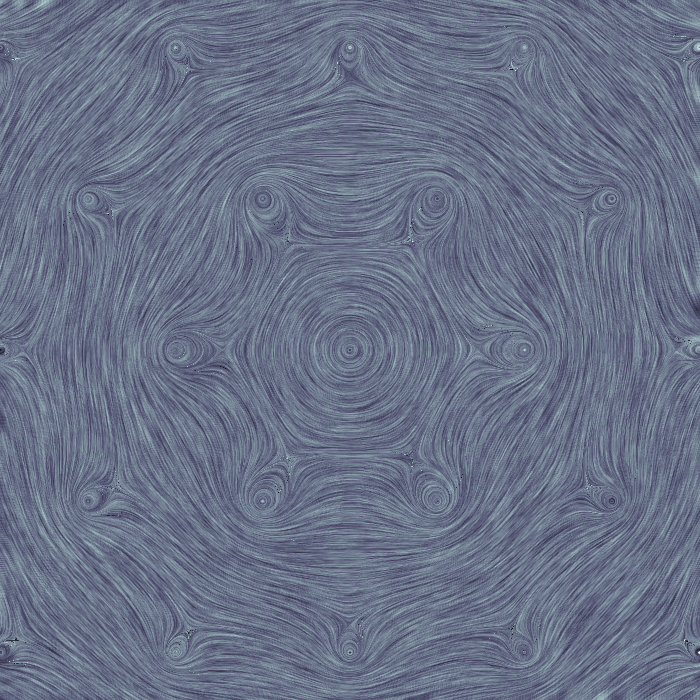

Line Integral Convolution¶
Line integral convolution is a technique, or family of techniques, for representing two-dimensional vector fields. The idea is to produce a texture which is highly correlated in the direction of the vector field but not correlated across the vector field. This is done by generating a noise texture then, for each pixel of the image, “flowing” forward and back along the vector field. The points along this path are looked up in the noise texture and averaged to give the LIC texture at the starting point. The basic technique ignores both the magnitude of the vector field and its sign. With a minor modification the same technique can be used to produce an animation of “flow” along the vector field.
Attached to this page is cython code to implement a simple line integral convolution operator, plus some demonstration python code. The demo code can either make more or less the image above - a simple array of vortices; note how an overall rotation appears in the sum of individual vortex vector fields, just as a superfluid’s “bulk rotation” is actually a vortex array - or it can make a video of the same vector field. The video is a little awkward to work with, since all the standard video compression techniques butcher it horribly, but it does work well.